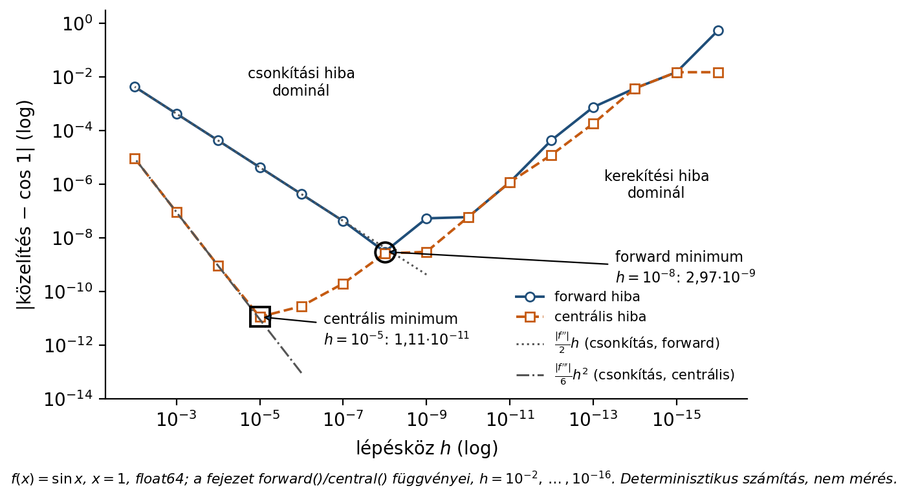

Belépő · szint: közép · idő: 60 perc · eszköz: Python, NumPy, matplotlib
Előfeltétel: 10.4. alfejezet · Célkészség: Meredekség és numerikus derivált · Kimenet: működő kód és a labor ellenőrző tesztje.
A Northstar késési modelljében (lásd 1.1. alfejezet) rendelésenként becsülünk egy kockázatot. A modell bemenete tartalmazhatja a kosárértéket, a távolságot vagy a prioritási jelzést, kimenete pedig egy valószínűség. Ha egy ilyen modellt ábrázolunk, azonnal felmerül a kérdés: egy adott pontban mennyire meredek a görbe? A derivált (derivative) erre a pillanatnyi változási rátára ad számot. A derivált előjele és nagysága mondja meg, hogy egy kis bemeneti növelés körülbelül mennyivel növeli vagy csökkenti a kimenetet, ezért később az optimalizáló algoritmusok és a veszteségfüggvények elemzésének is alapja.
Ebben az alfejezetben a bemenet egy valós szám , a modell egy függvény, a megfigyelési egység pedig egy konkrét kiértékelési pont . A cél az meredekség numerikus becslése és ellenőrzése. A tanuló labor két tesztfüggvényt használ: és a logisztikus függvényt. Az egység kulcsfontosságú: ha mértékegysége km és értéke eurócent, a derivált egysége eurócent/km.
Induló feladat a megoldás előtt: becsüld meg kézzel meredekségét az pontban a 3 és 4 között húzott szelővel! A szelő meredeksége . Vajon az érintő ennél nagyobb vagy kisebb? A függvény gyorsulva nő, ezért a 3 és 4 közötti átlagos meredekség nagyobb, mint a 3-beli pillanatnyi érték; előzetesen nagyjából 6 körüli eredményt várunk.
Az függvény grafikonján az és pontokon átmenő egyenes a szelő. A szelő meredekségét differenciahányadosnak (difference quotient) nevezzük:
ahol a lépésköz (step size). A képletben és ugyanazon mértékegységben értendő, előjeles; negatív hátrafelé vett differenciát ad. A hányados egysége , vagyis a kimenet egysége osztva a bemenet egységével. Ha eurócentben, kilométerben adott, a differenciahányados eurócent/km dimenziójú.
Kis számpélda , mellett:
A sorozat a 6 felé tart. Az ábrán a szelő egyre jobban rásimul az érintőre, ahogy a két metszéspont közeledik egymáshoz. A következő kód a szelőt és az érintőt rajzolja fel:
import numpy as np
import matplotlib.pyplot as plt
def f_sq(x):
return x * x
a = 3.0
h = 1.0
tangent_slope = 2.0 * a # f'(x)=2x, tehát f'(3)=6
xs = np.linspace(2.0, 4.5, 200)
plt.figure(figsize=(6.5, 4))
plt.plot(xs, f_sq(xs), label="$x^2$", color="black")
plt.plot([a, a + h], [f_sq(a), f_sq(a + h)], marker="o",
label="szelő (h=1)")
plt.plot([a - 0.6, a + 0.6],
[f_sq(a) - 0.6 * tangent_slope, f_sq(a) + 0.6 * tangent_slope],
linestyle="--", label="érintő")
plt.xlabel("x")
plt.ylabel("f(x)")
plt.title("Szelő és érintő az x=3 pontban")
plt.legend()
plt.tight_layout()
plt.savefig("derivative_segment.png", dpi=120)Az ábrán a szelő meredeksége 7, a és szelőé 6,5 és 6,1, az érintőé — a következő szakasz analitikus képlete szerint — 6.
A 9.3. alfejezetben a határértéket úgy vezettük be, mint közelítési folyamatot: egy sorozat értékei egy számhoz tartanak anélkül, hogy feltétlenül elérnék. A differenciahányados-sorozat ugyanezt a gondolatot használja. Ha a
határérték létezik és véges, akkor azt az függvény pontbeli deriváltjának nevezzük, és -val jelöljük. A jelölés nem jelenti azt, hogy -t behelyettesíthetünk; a alak önmagában értelmetlen. Azt jelenti, hogy a hányadost tetszőlegesen kicsi, de nullától különböző lépésközökkel közelítjük.
A derivált geometriai jelentése az érintő meredeksége, adatmodellezési jelentése pedig pillanatnyi változási ráta. Kis -ra a függvényérték lineárisan közelíthető:
Ez a linearizálás a későbbi optimalizáló lépések alapja: ha pozitív, a függvény lokálisan nő, ha negatív, akkor csökken. A meredekség előjele mondja meg, merre érdemes elmozdulni.
Fontos: pontbeli mennyiség, általában függ értékétől. Az deriváltfüggvénye , tehát , de . A konstans függvény deriváltja mindenütt 0. Erre a különbségre a gyakori tévedéseknél visszatérünk.
A fenti egyoldali, előre vett forward differencia mellett gyakori a centrális differencia (central difference):
Ez a két egyoldali hányados átlaga, és szimmetrikus az pont körül. Az példában -ra:
Itt a centrális differencia minden nullától különböző -ra pontosan 6-ot ad, mert a másodfokú hibatag kiesik. Általános függvénynél a centrális differencia sem pontos, de a csonkítási hibája jellemzően -tel arányos, míg a forward differenciáé -val arányos. Csökkenő mellett tehát a centrális változat gyorsabban javul.
A numerikus becslésnek két hibaforrása van. (1) A csonkítási hiba (truncation error) abból adódik, hogy a szelő nem azonos az érintővel; ez nagy -nál dominál. (2) A kerekítési hiba (rounding error) abból adódik, hogy és lebegőpontos közelítés; nagyon kis esetén a különbségképzés elveszti az értékes jegyeket, és a hányados zajossá válik.
A float64 gépi pontosság . A forward differenciánál a hasznos lépésköz nagyságrendje , a centrálisnál . A pontos optimum függ a függvénytől és a skálázástól, ezért a lépésközt mindig a konkrét feladaton kell ellenőrizni. A szabály itt sem az, hogy „minél kisebb , annál jobb”.
A numerikus derivált pontossága a lépésmérettől függ, és a forward és a centrális differencia másképp skálázódik. Az , példán a pontos derivált . A hibák:
| forward hiba | centrális hiba | |
|---|---|---|
| 4.216e-03 | 9.005e-06 | |
| 4.207e-05 | 9.004e-10 | |
| 4.207e-07 | 2.772e-11 | |
| 2.970e-09 | 2.581e-09 | |
| 5.848e-08 | 5.848e-08 | |
| 4.324e-05 | 1.227e-05 | |
| 3.707e-03 | 3.707e-03 | |
| 5.403e-01 | 1.481e-02 |

A forward hiba nagyságrendje , a centrálisé , ezért a centrális görbe lejjebb fut, és a minimuma kisebb h-nál jelentkezik: a mért optimum forwardnál (2.970e-09), centrálisnál (1.114e-11). A nagyon kis tartományban a kerekítési hiba dominál, és a centrális differencia is elveszíti az előnyét; -nál a forward gyakorlatilag használhatatlan, a centrális még hibát ad. A hiba nem monoton csökkenő, ezért a „minél kisebb , annál jobb” szabály hamis.
import math
def forward(x, h):
return (math.sin(x + h) - math.sin(x)) / h
def central(x, h):
return (math.sin(x + h) - math.sin(x - h)) / (2 * h)
exact = math.cos(1.0)
for exponent in range(2, 17):
h = 10.0 ** (-exponent)
print(h, abs(forward(1.0, h) - exact), abs(central(1.0, h) - exact))A lab/finite_diff.py sweep() függvénye a
teljes 15 lépésközös táblát és a két optimumot adja vissza; a
tests/test_finite_diff.py a forward/centrális görbét, az
optimumokat és az ismert deriváltat ellenőrzi.
A következő önálló szkript a két tesztfüggvényen becsüli a
deriváltat, kiírja a hibát több lépésközre, és log-log ábrát ment. Nincs
véletlenszám, ezért seedre nincs szükség; a futási eredmény a NumPy
float64 kerekítésétől függhet, ezért platformok közötti bitazonosságot
nem ígérünk. A kódot a lab projekt gyökérkönyvtárában, a
projekt Python-környezetében futtatjuk:
# platform: Linux/macOS bash, munkakönyvtár: a könyv lab/ projektgyökere
python s041_derivative_demo.pyimport numpy as np
import matplotlib.pyplot as plt
def f_sq(x):
"""f(x)=x^2, skalár bemenetre."""
return x * x
def df_sq_exact(x):
"""f'(x)=2x analitikus derivált."""
return 2.0 * x
def sigmoid(x):
"""Numerikusan stabil logisztikus függvény.
A közvetlen 1/(1+exp(-x)) nagy negatív x-re túlcsordulást
kockáztat; ez az alak mindkét előjel mellett stabil.
"""
return np.exp(np.minimum(x, 0.0)) / (1.0 + np.exp(-np.abs(x)))
def d_sigmoid_exact(x):
"""sigma'(x)=sigma(x)(1-sigma(x))."""
s = sigmoid(x)
return s * (1.0 - s)
def forward_difference(f, x, h):
return (f(x + h) - f(x)) / h
def central_difference(f, x, h):
return (f(x + h) - f(x - h)) / (2.0 * h)
# --- 1. rész: x^2 az x=3 pontban -------------------------------
a = 3.0
exact_sq = df_sq_exact(a)
print(f"x^2, a={a}: analitikus derivált {exact_sq:.6f}")
for h in (1e-3, 1e-5, 1e-8):
fd = forward_difference(f_sq, a, h)
cd = central_difference(f_sq, a, h)
print(f"h={h:.0e}: forward {fd:.9f}, central {cd:.9f}")
# --- 2. rész: logisztikus függvény az x=1 pontban --------------
b = 1.0
exact_sig = d_sigmoid_exact(b)
print(f"\nsigma, x={b}: analitikus derivált {exact_sig:.9f}")
h_sig = 1e-6
fd_sig = forward_difference(sigmoid, b, h_sig)
cd_sig = central_difference(sigmoid, b, h_sig)
print(f"h={h_sig:.0e}: forward {fd_sig:.9f}, central {cd_sig:.9f}")
# --- 3. rész: hiba a lépésköz függvényében ----------------------
hs = np.logspace(-16.0, -1.0, 61)
err_f = [abs(forward_difference(f_sq, a, h) - exact_sq) for h in hs]
err_c = [abs(central_difference(f_sq, a, h) - exact_sq) for h in hs]
plt.figure(figsize=(7, 4.2))
plt.loglog(hs, err_f, marker=".", label="forward")
plt.loglog(hs, err_c, marker=".", label="central")
plt.xlabel("h lépésköz")
plt.ylabel("abszolút hiba")
plt.title("x^2 numerikus deriváltjának hibája x=3-ban")
plt.legend()
plt.tight_layout()
plt.savefig("s041_derivative_error.png", dpi=120)
print("\nÁbra elmentve: s041_derivative_error.png")A kimenet (a scratchpadben NumPy 2.5.4-gyel, CPython 3.14.4-gyel
futtatva; IEEE-754 float64 mellett más gépen is ugyanez
várható):
x^2, a=3.0: analitikus derivált 6.000000
h=1e-03: forward 6.001000000, central 6.000000000
h=1e-05: forward 6.000010000, central 6.000000000
h=1e-08: forward 5.999999964, central 5.999999964
sigma, x=1.0: analitikus derivált 0.196611933
h=1e-06: forward 0.196611888, central 0.196611933
Ábra elmentve: s041_derivative_error.pngA
melletti sor a csonkítási hiba csökkenése és a kerekítési zaj
megjelenése közötti átmenetet mutatja: a képlet szerint a forward érték
,
a centrálisé pontosan 6 lenne, a float64-ben azonban a
összeg kerekítése miatt a számláló nem pontosan
,
és mindkét becslés
(eltérés kb.
).
A centrális differencia
-re
tehát csak a nagyobb lépésközöknél
()
adja lebegőpontosan is pontosan a 6-ot. A scipy.optimize-ot
itt még nem hívjuk; a következő alfejezetek gradiens alapú keresői erre
a meredekségfogalomra épülnek.
A forward differencia esetén:
Az analitikus érték 6, tehát az abszolút hiba pontosan . Ez a várt -val arányos csonkítási hiba: másodfokú függvénynél az eltérés éppen a lépésköz nagyságrendjébe esik. A centrális differencia ugyanerre a lépésközre pontosan 6-ot ad, mert a másodfokú hibatag kiesik. Ez egyben a kód invariánsa: -re a centrális differencia matematikailag 6, numerikusan pedig 6-hoz közeli mindaddig, amíg a kerekítési hiba kicsi.
A logisztikus függvény deriváltjának analitikus alakja az összetett függvény szabályából adódik, amelyet a 11.3. alfejezet tárgyal részletesen; itt csak felhasználjuk:
Az pontban , ezért
A centrális differencia mellett az elméleti hibája nagyságrendű, azaz alatti; a fenti várt kimenetben 9 tizedesjegyre egyezik az analitikus értékkel.
A hibaábra alakja a következő: nagy -nál a forward görbe -val, a centrális -tel arányosan csökken; körülbelül (forward), illetve (centrális) alatt a kerekítési zaj felnövekszik, és a hiba újra nő. Az ábra egyszerre mutatja a csonkítási és a kerekítési hibát, ezért alkalmas arra, hogy a lépésköz-választást indokoljuk.
A numerikus differencia hányadosának hibája a lépésköz csökkentésével nem monoton javul: a csonkolási hiba mérséklődik, miközben a kerekítési hiba és a kivonási pontatlanság felerősödhet. A hibatáblázatot ezért logaritmikus -rácson is érdemes ábrázolni.
Értelmezés és kézi kontroll. Egy fiktív szállítási költségmodell eurócent, ahol a távolság km-ben. Add meg a derivált egységét! Számold ki kézzel km-nél a forward differenciahányadost km-rel, és hasonlítsd össze az analitikus eurócent/km értékkel!
Implementálás. Írj
central_difference(f, x, h) függvényt, amelynek bemenete
egy skalár függvény, egy pont és egy lépésköz, kimenete pedig egy
lebegőpontos szám. Alkalmazd a logisztikus függvényre az
pontban,
lépésközzel! Add meg az abszolút hibát a
analitikus alakhoz képest!
Hibadiagnózis. Egy kolléga ezt a kódot futtatta:
def bad_derivative(f, x):
h = 1e-16
return (f(x + h) - f(x)) / h
print(bad_derivative(lambda x: x * x, 3.0))Azt kapta, hogy a függvény 0.0-t ír ki, pedig a helyes
érték 6 lenne. Mi a numerikus hiba ezzel a lépésközzel, és milyen
második veszély fenyegetne akkor is, ha a lépésköz valamivel nagyobb
lenne? Javítsd úgy, hogy a forward differenciánál szokásos
nagyságrendű lépésközt használjon!
1. A derivált egysége eurócent/km, mert a számláló eurócentben, a nevező km-ben van. Kézi számolás:
Az analitikus derivált , tehát eurócent/km. A forward becslés hibája 3 eurócent/km, relatíve ; ez a nagy lépésköz miatt várható. A centrális differencia ugyanezzel a -val pontosan 120-at adna, mert a másodfokú függvény hibatagja kiesik.
2. Egy lehetséges implementáció:
import math
def central_difference(f, x, h):
return (f(x + h) - f(x - h)) / (2.0 * h)
def sigmoid_stable(x):
if x >= 0.0:
return 1.0 / (1.0 + math.exp(-x))
e = math.exp(x)
return e / (1.0 + e)
x = 1.2
h = 1e-5
est = central_difference(sigmoid_stable, x, h)
exact = sigmoid_stable(x) * (1.0 - sigmoid_stable(x))
print(f"becsült {est:.12f}, analitikus {exact:.12f}, "
f"abszolút eltérés {abs(est - exact):.2e}")Az pontban , a derivált analitikus értéke . A centrális differencia mellett a -tel arányos csonkítás miatt nagyságrendű abszolút hibát ad; a fenti kimenet szemléltető, a tényleges futást a saját környezetben kell elvégezni. Ellenőrzési tolerancia: az eltérés alatt marad.
3. Az első hiba: kisebb, mint a float64 fél ulp-je az pontban (az ulp ott ), ezért az összeg ugyanarra a lebegőpontos számra kerekedik, mint a 3. A számláló így pontosan 0, a hányados 0. A második veszély: ha a lépésköz valamivel nagyobb lenne, de még mindig nagyon kicsi, két közeli szám különbségképzése katasztrofális kiejtést (catastrophic cancellation) okozna, és a hányados zajossá válna. Javítás:
def good_forward(f, x, h=1e-8):
return (f(x + h) - f(x)) / h
print(good_forward(lambda x: x * x, 3.0)) # futtatva: 5.999999963535174Az eredmény az analitikus 6-tól kb. -nal tér el (a csonkítási hiba és a kerekítési zaj együtt); a tesztben a 6-tól mért abszolút eltérés alatt marad.
4. A láncszabály (amelyet a 11.3. alfejezetben igazolunk) szerint, ha a belső függvény , akkor
Az pontban és , tehát
A gyakorlati jelentés: egysége 100 euró, így a derivált szerint ebben a pontban egy kis kosárérték-növekedés valószínűségi egységenként -szoros változást okoz (például 10 euró, azaz esetén kb. , vagyis 3 százalékpont; a pontos változás ). Egy teljes egységre (100 euró) a lineáris közelítés -ről -ra emelné a becslést, a pontos modellérték viszont : az eltérés mutatja, hogy a derivált lokális, csak kis lépésekre érvényes közelítés. A centrális differenciás ellenőrzés mellett körüli értéket ad; az elfogadható eltérés alatt van.
A leggyakoribb tévedés, hogy a deriváltat egyetlen számmal azonosítjuk, mintha a függvény meredeksége állandó lenne. Ellenpélda: az függvény deriváltja -ban 6, de -ben 20; ugyanaz a függvény más pontban más meredekséget ad. Ha a szállítási költség deriváltját kiszámoljuk 2 km-nél, az nem érvényes 50 km-nél. A konstans függvény a kivétel: például deriváltja mindenütt 0. Hasonló tévedés, hogy a legkisebb mindig pontosabb; a hibaábra éppen azt mutatja, hogy túl kis lépésköznél a kerekítési zaj elrontja a becslést.
Visszautalás: a 10.1. alfejezetben a vektort rendezett számlistaként, a különbségvektort pedig a távolság alapjaként vezettük be. A differenciahányados egy dimenzióban ugyanezt a különbséget skálázza: a függvény kimenetének változását osztjuk a bemenet változásával. A 7.1. alfejezet megfigyelési egység fogalma itt a kiértékelési pontban tér vissza: a derivált mindig egy konkrét ponthoz tartozik, és nem vihető át automatikusan más pontra.
Önellenőrzés: (a) Miért nem helyettesíthetjük be -t a differenciahányadosba? (b) Mi a különbség a forward és a centrális differencia képlete között? (c) Milyen mértékegysége van a deriváltnak egy euró-költség és km-távolság függvénynél? (d) Miért nő meg a numerikus hiba nagyon kis esetén?
A differenciahányados a szelő meredeksége, és ahogy a lépésköz nullához tart, az érintő meredekségét, a deriváltat közelíti. A derivált pontbeli változási ráta, mértékegysége a kimenet és a bemenet egységének hányadosa. Numerikusan a forward differencia egyszerű, a centrális differencia szimmetrikus és általában pontosabb, de a lépésközt a csonkítási és a kerekítési hiba egyensúlya szabja meg. Az és a logisztikus függvény laborja kézi kontrollal és hibaábrával igazolja ezt. A következő alkalmazás a 11.2. alfejezet parciális derivált, amely több bemeneti koordinátára terjeszti ki ezt az egyváltozós meredekséget.